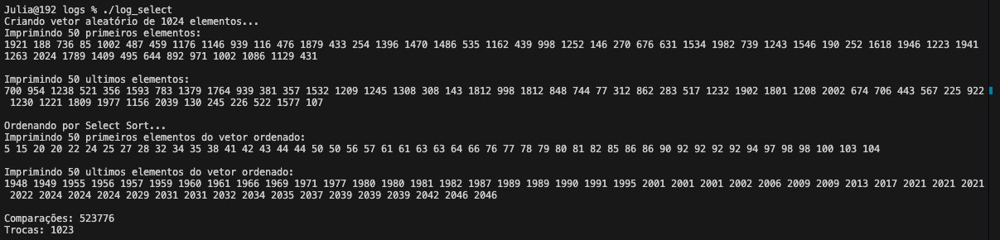
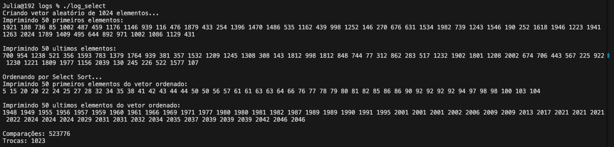
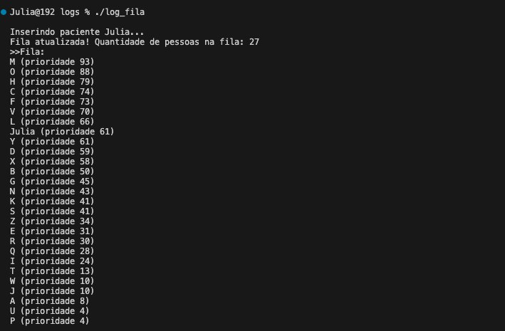
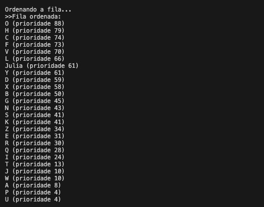
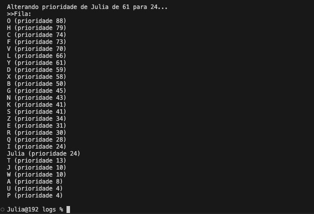
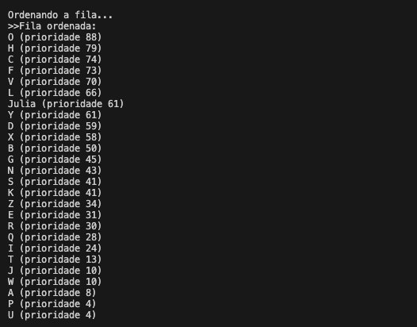
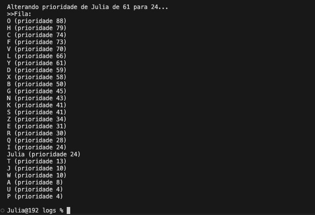
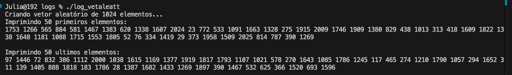
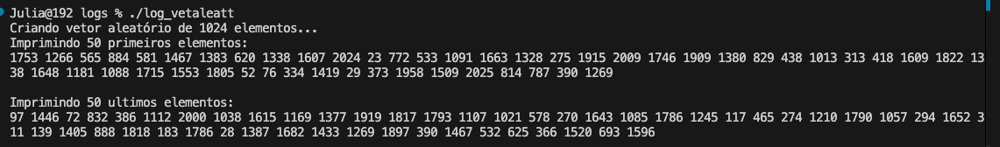

Os arquivos abaixo mostram o conteúdo final das implementações em C utilizadas nos testes.
heap.c
Abrir heap.cAbrir heap.c.txt
menu.c
Abrir menu.cAbrir menu.c.txt
Arquivos auxiliares utilizados no trabalho
Abrir makefileAbrir makefile.txt Abrir heap.h
Abrir heap.h.txt
As imagens abaixo mostram os resultados obtidos durante os testes.
Testes com SelectionSort
Abrir log_selectsort.c.txt 

Testes com HeapSort
Abrir log_heapsort.c.txt

Testes com QuickSort
Abrir log_quicksort.c.txt

Testes com a fila de pacientes
Abrir log_filat.c.txt  



Testes programa gerando diferentes vetores a cada execução
Abrir log_vet_aleat.c.txt 
